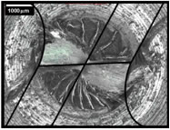
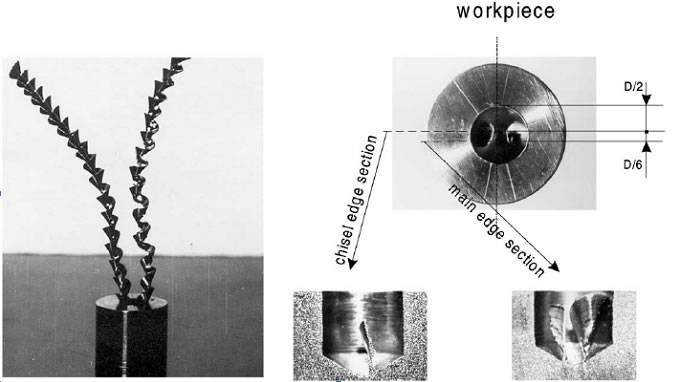

MODELAGEM E SIMULAÇÃO DAS FORÇAS E DEFORMAÇÕES DO MATERIAL NA REGIÃO DO GUME TRANSVERSAL DE BROCAS HELICOIDAISOBJETIVOSO objetivo do trabalho é a realização de experimentos e análise de raízes de cavaco para verificar alterações da força e encruamento do material causados pela deformação, ocorrida na região do gume transversal, sendo os dados resultantes dos experimentos alimentados no modelo de furação desenvolvido. Neste gume, tem-se um fenômeno de difícil modelagem e controle: em decorrência do ângulo de saída negativo, ele praticamente não realiza corte de material e sim uma deformação plástica do material da peça e extrusão deste material na direção das regiões cortantes do gume principal. Em função dessa deformação plástica, o material da peça pode encruar, e com isso ocorrerem modificações das suas propriedades, como dureza e força específica de corte. 
Para se analisar as alterações nas propriedades do material, que ocorrem nessa região, faz-se necessária a obtenção de raízes de cavaco e com esse objetivo é que se propõe também a construção e aplicação de um Quick Stop Device (dispositivo que interrompe subitamente o processo de corte) no processo de furação. A simulação permite estudar e analisar questões do tipo “o que aconteceria se?” em um sistema sem que este sofra perturbações, já que é realizada no computador, sendo que a grande vantagem da simulação consiste na possibilidade de redução do custo envolvido num projeto. Reduz-se o número de experimentos, que são considerados fundamentais, baixando-se o custo final de desenvolvimento e otimização de um determinado produto ou processo. PROCEDIMENTOSA primeira etapa do projeto, sem a qual as várias atividades subseqüentes não podem ser iniciadas, é o projeto e construção do Quick Stop Device (QSD). Posteriormente à construção do QSD, são previstos os ensaios em corpos-de-prova projetados para as operações de furação. Para os ensaios serão utilizadas brocas helicoidais de metal-duro, com diferentes afiações de ponta. Uma vez obtidas as raízes de cavaco, proceder-se-á uma análise metalográfica no plano de interesse da zona de corte da amostra, que será cortada, lixada, polida e atacada com reagentes químicos. 
RESULTADOSCom a simulação, espera-se uma diminuição dos custos, uma vez que é possível analisar virtualmente as variáveis do processo de furação, como por exemplo, o comportamento das temperaturas e forças que atuam, que por sua vez influenciam a vida da broca e a qualidade do furo obtido, entre outras grandezas. Reduz-se, assim, o número de ensaios necessários, torna-se possível a determinação de um domínio de valores de parâmetros de entrada mais adequado e o diagnóstico de possíveis problemas no processo. Como resultados esperados do trabalho, pode-se citar a formação e o aperfeiçoamento de pesquisadores, a divulgação de informações e experiências através de artigos em congressos, revistas técnicas e científicas e a divulgação e emprego dos resultados obtidos na pesquisa pela indústria. |